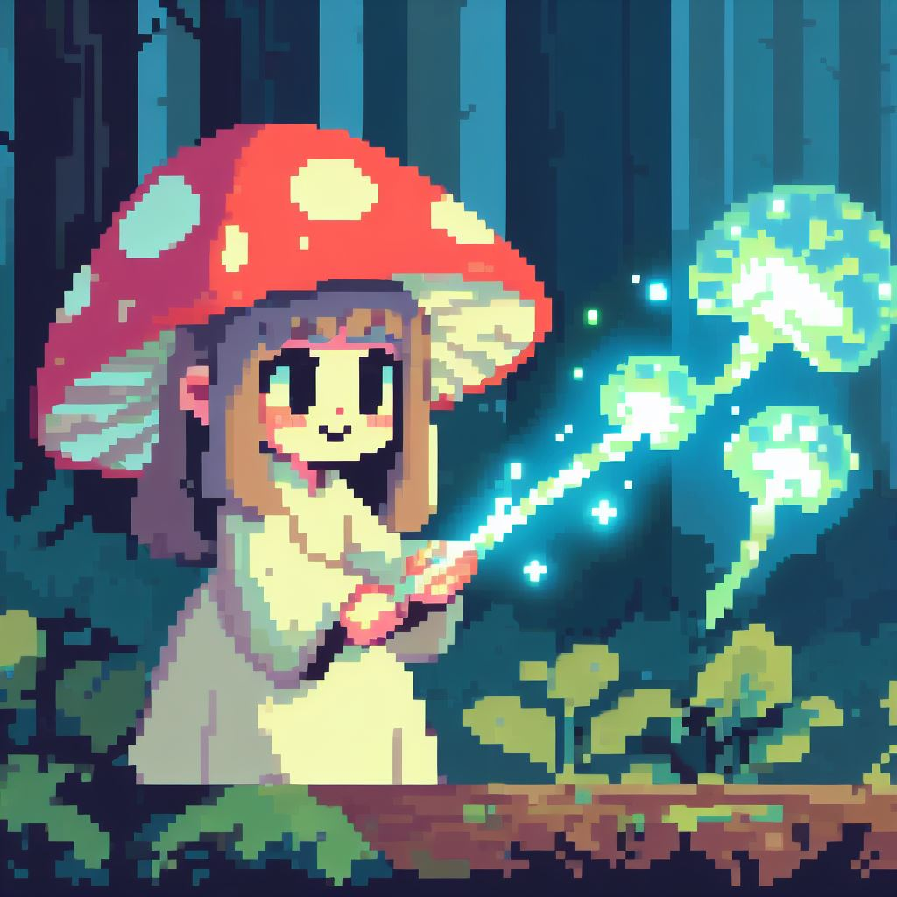

Play a relaxing pixel art style game where you play as Shmarilla, a special mushroom girl born from the forest with a unique power! She can create bioluminescent mushrooms to attach to things! These special mushrooms act as a catalyst to help wildlife bloom into fruition! In MuushroomrGal the forest has been taken over by the big evil city dwellers. After seeing many of her tree and animal friends affected by the city dwellers she has decided to take action into her own hands by taking over the city!
MuushroomrGal is a side scroller platformer game where you have to maneuver and jump through many obstacles while throwing and attaching your mushrooms to everything in order to bring the beautiful forest back.
 Download jpg